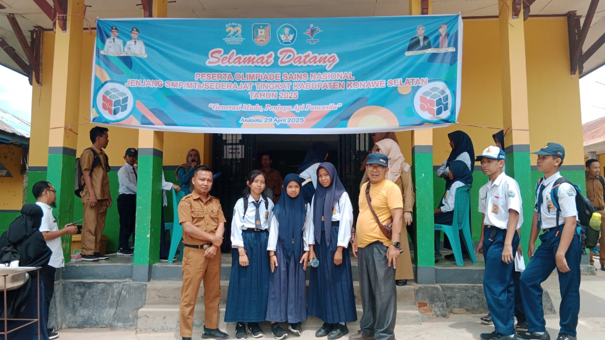
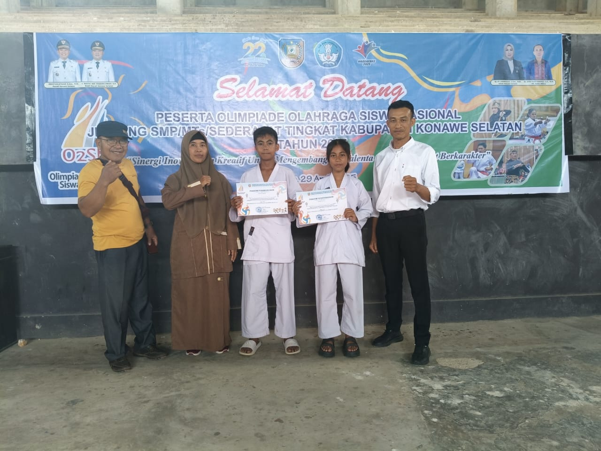

Informasi Sekolah
Riwayat Kepala Sekolah SMPN 20 Konawe Selatan
| No | Nama | Bertugas Pada Tahun | Ket |
|---|---|---|---|
| 1 | Halim Lamite | 1997 - 2002 | Kepala Sekolah |
| 2 | Thamrin | 2002 - 2007 | Kepala Sekolah |
| 3 | Sutomo Hs, S.Pd | 2007 - 2012 | Kepala Sekolah |
| 4 | Suyitno, S.Pd., M.Pd | 2012 - 2017 | Kepala Sekolah |
| 5 | Drs, Sri Harto | 2017 - 2021 | Kepala Sekolah |
| 6 | I Nyoman Berata, S.Pd | 2021 - 2023 | Kepala Sekolah |
| 7 | I Nyoman Sukada, S.Pd | 2023 - Sampai Sekarang | Kepala Sekolah |
Data Tenaga Kependidikan
Guru dan tenaga kependidikan SMP Negeri 20 Konawe Selatan terdiri dari tenaga pendidik dan tenaga kependidikan yang profesional.
| NO | JENIS TENAGA | JUMLAH |
|---|---|---|
| Loading... | ||
Untuk melihat Profil Guru dan Tenaga Kependidikan, silakan kunjungi Halaman Ini
DATA PESERTA DIDIK SMP N 20 KONAWE SELATAN
| NO | KELAS | BERDASARKAN JENIS KELAMIN | BERDASARKAN AGAMA | WALI KELAS | ||||
|---|---|---|---|---|---|---|---|---|
| LAKI-LAKI | PEREMPUAN | JUMLAH | ISLAM | HINDU | JUMLAH | |||
| Loading... | ||||||||
Untuk melihat Profil Siswa, silakan kunjungi Halaman Ini
Siswa Berprestasi

OSN

O2SN

FLS3N
Kurikulum Sekolah
Sekolah kami menerapkan Kurikulum Nasional yang dirancang untuk membentuk peserta didik yang berkarakter, kreatif, dan siap menghadapi tantangan zaman. Kurikulum ini dikembangkan dengan pendekatan tematik integratif serta mengedepankan nilai-nilai karakter, literasi, dan pemanfaatan teknologi.
1. Struktur Kurikulum
- Kurikulum Merdeka dan/atau Kurikulum 2013 (K-13)
- Pembelajaran tematik dan berbasis proyek
- Penekanan pada literasi, numerasi, dan karakter
2. Bidang Pelajaran
- Pendidikan Agama dan Budi Pekerti
- PPKn (Pendidikan Pancasila dan Kewarganegaraan)
- Bahasa Indonesia dan Bahasa Inggris
- Matematika
- Ilmu Pengetahuan Alam (IPA) dan Ilmu Pengetahuan Sosial (IPS)
- Seni Budaya
- PJOK (Pendidikan Jasmani, Olahraga, dan Kesehatan)
- Prakarya dan Kewirausahaan
- Muatan Lokal (Bahasa Daerah, dll.)
3. Pendekatan Pembelajaran
- Pembelajaran aktif, kolaboratif, dan menyenangkan
- Pemanfaatan media digital dan teknologi informasi
- Penilaian proses dan hasil belajar (formatif & sumatif)
- Proyek Penguatan Profil Pelajar Pancasila
Daftar Sarana dan Prasarana Sekolah
1. Ruang Pembelajaran
- Ruang Kelas: Nyaman, bersih, dilengkapi papan tulis, proyektor, dan kursi siswa.
- Laboratorium IPA: Fasilitas praktikum Biologi, Kimia, dan Fisika.
- Laboratorium Komputer: Dilengkapi perangkat modern dan koneksi internet.
- Perpustakaan: Koleksi buku pelajaran, fiksi, referensi, dan buku digital.
2. Sarana Ibadah dan Ekstrakurikuler
- Ruang OSIS dan Ekstrakurikuler: Ruang organisasi siswa dan kegiatan klub sekolah.
3. Sarana Olahraga
- Lapangan Sepak Bola: Untuk pelajaran PJOK dan kegiatan olahraga.
- Lapangan Basket / Voli: Lapangan serbaguna untuk berbagai cabang olahraga.
- Alat Olahraga: Seperti bola, net, raket, dan perlengkapan lainnya.
4. Sarana Pendukung
- Kantin Sekolah: Menyediakan makanan sehat dan higienis.
- UKS (Unit Kesehatan Sekolah): Menangani pertolongan pertama dan kesehatan ringan siswa.
- Ruang Guru: Tempat kerja dan istirahat guru.
- Ruang Kepala Sekolah: Ruang pimpinan sekolah untuk operasional manajerial.
- Ruang Tata Usaha (TU): Pengelolaan administrasi sekolah.
5. Prasarana Tambahan
- Tempat Parkir: Area parkir untuk guru, karyawan, tamu sekolah, dan siswa.
- Toilet Siswa dan Guru: Terpisah, bersih, dan terjaga kebersihannya.
- Tempat Cuci Tangan: Disediakan di berbagai titik untuk kebersihan tangan.
- WiFi Sekolah: Mendukung pembelajaran digital dan akses informasi.
- Sistem Informasi Sekolah (SIS): Untuk pengelolaan data siswa, akademik, dan administrasi.